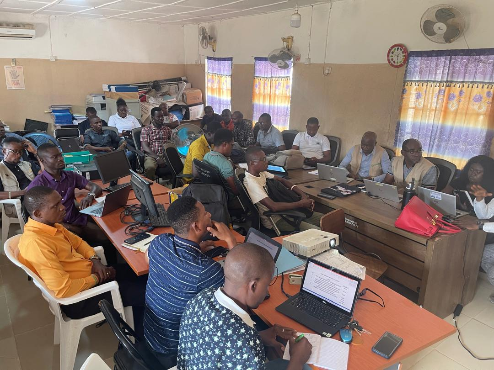

Open to roles, contracts and consulting
Hi, I am Alhaji.
I am a Data Officer and MEL specialist in Bo, Sierra Leone. I help health programmes turn field data into decisions, and I keep the technology behind that data working.
- Based in Bo
- In IT since 2015
- Health data since 2024
- English and Krio

My story
From a computer training centre in Bo to managing health programme data.
- 2015
Where I started
I trained in computer software, hardware and networking at the Growth Centre Computer Training Institute in Bo. That year I also started my own small data and IT business, which still runs from an office in the Growth Centre compound.
- 2016
Learning by teaching
As an ICT tutor and internet cafe attendant I taught Microsoft Office and fixed hardware and network problems every day. Teaching taught me to explain technical things in plain words.
- 2022
Bigger systems
As IT and Data Officer for SLPP in Bo District and then Assistant IT Manager at SLIEPA in Freetown, I worked on membership databases, analysis, agency-wide infrastructure, helpdesk support, cybersecurity and staff training.
- 2024
Health data
At Rural Health Care Initiative I manage immunisation, home visit and malaria programme data, build the Survey123 forms field teams use, and supervise a contract Data Assistant.
Experience
- Oct 2024 to present
Evaluator and Data Officer
Rural Health Care Initiative (RHCI), Tikonko
Health data systems, CHW database management, dashboards, mobile data collection and M&E reporting. Reported a 25% accuracy improvement in programme data.
- Sep 2023 to Oct 2024
Assistant IT Manager
SLIEPA, Freetown
Agency-wide IT infrastructure, helpdesk, cybersecurity measures and staff ICT training. Reported 99% system availability.
- Jan 2022 to Sep 2023
IT and Data Officer
SLPP, Bo District
Centralised membership databases, data analysis and digital campaign management. Reported a 30% increase in online engagement.
- 2017
Registrar; Exhibition and Distribution Officer
NEC and NCRA
Short-term registration, exhibition and distribution roles.
- 2016 to 2021
ICT Tutor and Internet Cafe Attendant
Growth Centre, Bo
Taught Microsoft Office to more than 200 students and handled hardware and network troubleshooting.
- Sep 2015 to present
Independent data and IT consultant
Own business, Growth Centre compound, Bo
Data, IT support and training for individuals, offices and organisations, alongside my employed roles.
Percentages are figures reported in those roles.
Skills and tools
Data and M&E
- Power BI
- Excel
- Survey123
- XLSForm
- Data cleaning
- Data quality checks
- Indicator reporting
- Logframes
Systems
- PostgreSQL
- Flask
- Google Apps Script
- Google Sheets
- HTML and JavaScript
- Progressive web apps
- System design
IT and networks
- LAN and Wi-Fi
- Hardware repair
- Windows
- Backups
- Basic security
- WordPress
- Helpdesk
Training and communication
- Staff ICT training
- Data skills training
- Reports
- Presentations
- Documentation
- English and Krio
How I work
- Solve a real problemTechnology should fix something people can name, like late reports or lost files.
- Keep it simpleThe best tool is one the people using it every day can understand.
- Support after launchHandover, training and follow-up matter as much as the build.
- Protect peopleCollect only what is needed and keep personal data out of shared files.
Education
- In progressBSc Computer ScienceCurrently studying, with a focus on maths for data and systems work
- 2017 to 2019Diploma in NetworkingGrowth Centre Computer Training Institute, Bo
- 2015 to 2017Diploma in Computer HardwareGrowth Centre Computer Training Institute, Bo
- 2015 to 2016Diploma in Computer SoftwareGrowth Centre Computer Training Institute, Bo
- 2011 to 2015WASSCESecondary school
Organisations I have worked with

Beyond work
- ElectronicsExploring circuits and Arduino projects.
- Always learningBuilding my maths for computer science, one evening at a time.
- Sharing knowledgeWriting notes and free templates for anyone learning data and IT.
- FootballFollowing the game.
Want to work together?
Send me a short description of the report, form or system you need.